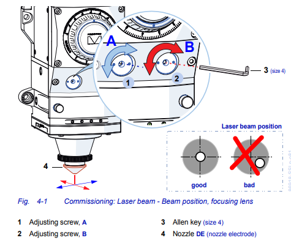

Setting and adjustment
Settings of the laser cutting control software
Open FRIENDESS software to set up machine, laser device, servo proportional valve and various alarm parameters (See FRIENDESS Laser Cutting Control Software User Manual for details).
“User Setting” is used to set parameters in relation to user habits. The “Backup” is used to back up all parameters in a compressed file for easy recovery. “BCS100 monitoring interface” is used to monitor and display the BCS100 height controller interface. BCS100 follow controller can perform a series of operation including return origin, follow, locate and one-key calibration etc. “Diagnostic window” is used to diagnose and monitor the software.
8.1 Error measure
Click the “” button to move the cutting head in dry run mode along the graphic to be processed. When the dry run is finished, a blue dashed line will be displayed to show the feedback path of the servo motor. The process parameters of the actual cutting can be adjusted according to this path.
8.2 Focus position
For cutting on different materials, the focus position needs to be adjusted according to various cutting process requirements. When the focus position parameters are decided, the +/- direction of the focus position needs to be considered. The focus position on the sheet surface is defined as zero position. Any focus positions below the sheet surface are defined as negative positions. Any focus positions above the sheet surface are defined as positive positions. As shown below:
BFC CNC laser cutting machine can be configured with LC-M series and PC series cutting head with auto focusing system. For initial setting, replacement of lens or laser device, the focus position must be set manually again.
Follow the steps below to set focus position manually:
1.Set the focus position to upper limit position and the laser power to 80-100w.
2.Move the masking tape by no more than 0.5mm each time. Ignite the beam to shot a hole (the smaller the hole, the better).
3.After several shots, find the smallest hole. The focus position of the smallest hole is the zero focus position. At this position, the focus in on the tip of the nozzle.
8.3 Co-axial alignment of the cutting nozzle and the laser device
In laser cutting, different nozzle diameters are required for use on different sheet materials and thicknesses. The nozzle should be replaced according to the specific requirements. After nozzle replacement and focus adjustment, it must be ensured that the cutting nozzle is coaxial with the focused laser beam. Otherwise, it’s easy to cause damage to the nozzle or even to the machine.
1、Mark the nozzle tip with a red marker pen and attach the masking tape (or scotch tape) to the nozzle.
2、Execute [Auto] mode. Check the position of the hole.
3、If the hole is not centered relative to the nozzle orifice, turn the adjusting screw A and B for alignment.
4、Repeat steps 1-3 until the hole is centered to the nozzle orifice.
Figure 4- 26
LC-m series cutting head
PC series cutting head
Figure 4- 28
